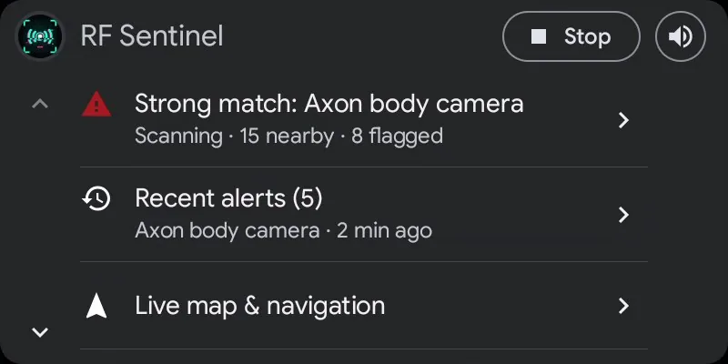
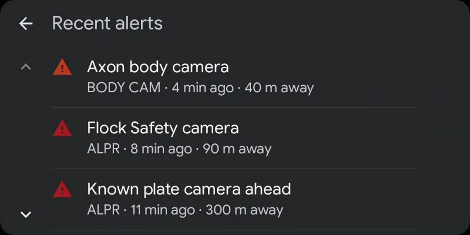
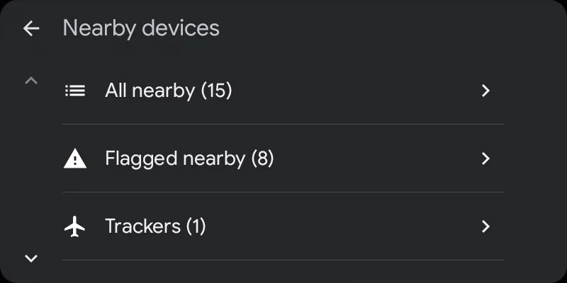
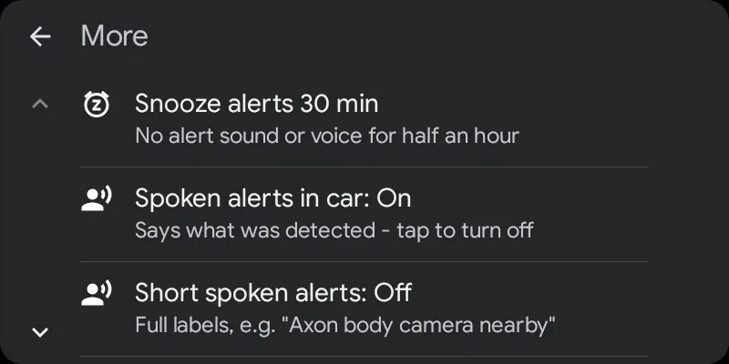
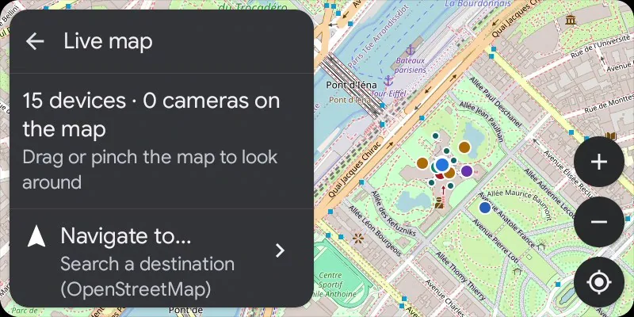
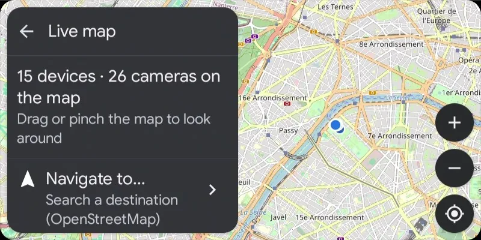

rf_sentinel / android-auto
Android Auto
A driver-safe, template-based Android Auto app: what's around you, on the car screen, with alerts through the car speakers.







Demo data. These screens are the full car app, shown on Google's Desktop Head Unit; from the GitHub APK a real car shows the screen and alert messages described below.
Screens
- Home, most important first (a car shows about six rows while driving): the threat headline (tap for the flagged devices), the next known camera on your way with its distance, recent alerts, the map, nearby devices and More. Start/Stop and a speaker button that mutes or unmutes all alert sound sit in the header.
- Nearby devices: the phone's filters with live counts (flagged, trackers, drones, favorites, new, Bluetooth, WiFi, ESP32 / USB). Each row says which radio heard it.
- Device details: Whitelist, Watch and Favorite; trackers get the phone's three ignore choices (it's mine, today only, pause follow warnings). Navigate hands drones with a known position to your navigation app. A device that has left still shows its last alert.
- Recent alerts: the last 40 alerts (devices, cameras, cell warnings), kept after the device is gone.
- Cameras: tap one to see it alone on the map, navigate to it, or tap its row to turn its alerts off or back on (faded on the maps).
- More: snooze alerts for 30 minutes, spoken alerts in the car, short spoken alerts, whether AirTags count as trackers, cell towers (fake-cell check status, serving cell and neighbours) and hardware status (phone radios and the scan watchdog, ESP32 / Marauder / Flipper on USB, OUI-SPY over Bluetooth, USB WiFi adapter).
- Live map: RF Sentinel's own OpenStreetMap map on the car screen with devices in list / radar colours, plate-reader, speed and red-light cameras, and your position. Drag, pinch or + / −; ◎ follows the car again. Needs car API level 7; older Android Auto gets car-drawn maps with device and camera lists.
- Navigation: Navigate to... searches with Nominatim (on submit only, no search-as-you-type), keeps recent destinations on the phone, routes with OSRM, draws the route with next turn, ETA and distance, speaks turns and re-routes.
- Alerts: heads-up cards on the car screen with Mute 30 min and Ignore buttons, spoken through the car speakers as navigation guidance audio, briefly lowering music.
- Phone screen off: Android limits Bluetooth scanning then. The car warns you when a scan starts that way and shows "Bluetooth limited" on its home screen; WiFi, cell checks and known cameras keep working.
The GitHub APK in a real car
Google lets apps built with its Car App Library, as RF Sentinel is, run in a real car only when they're installed from a trusted store (Google Play or ONE store). Android Auto's Unknown sources developer setting covers media and messaging apps, not these (Google's testing guide). So the GitHub APK doesn't appear in a real car's launcher, whatever its settings; its car screens run on Google's Desktop Head Unit emulator.
The GitHub APK still works in a real car, through the two app types that setting does cover:
- Open Android Auto settings on the phone and tap Version ten times to unlock developer mode.
- ⋮ → Developer settings → enable Unknown sources, then reconnect to the car.
- RF Sentinel screen (media-style): tabs for Threats, Cameras (nearest known cameras, the one ahead first), Alerts and Status (start / stop scanning, mute, cell towers, hardware), plus a card with the current threat and Scan / Mute buttons. It never plays anything, so your music keeps playing and keeps the steering-wheel buttons.
- Alerts as messages: every alert arrives as a message from RF Sentinel, which the car shows and can read aloud. Reply "mute" to silence alerts for 30 minutes, or "ignore" to stop alerting about the latest device.
- If RF Sentinel is missing from the car's launcher, tick it under Customize launcher. The live map needs the full car app, so it stays on the Desktop Head Unit.
Auto start
Settings → Start scanning automatically in the car: scanning starts when the phone connects to your car's Bluetooth or to Android Auto, and stops when you leave if the car started it.
Navigation privacy
Nominatim and OSRM see the search, your position and destination, and your IP address, only when you search or start a route. They never see your scans.